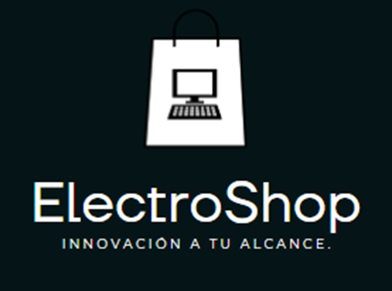
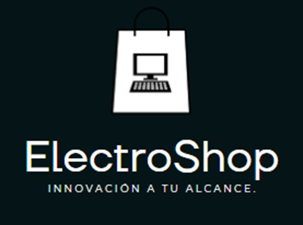

-¡Trabaja o relájate cómodamente y sin pasar más calor!
-Este dispositivo incorpora tecnología de evaporación que convierte el agua fría en aire fresco y limpio, y luego lo envía hacia ti por medio de un ventilador. Es muy sencillo de utilizar, además, su operación es silenciosa.
-4 velocidades: El enfriador tiene un botón para que elijas la fuerza con la que quieres que salga el aire.
-2 intensidades: Cuenta con humidificador para vaporizar el agua, en un nivel normal o alto, y así dar una sensación de frescura a la piel.
-Capacidad: Su tanque puede contener hasta 700 ml de agua que rendirán hasta 6 h1 para refrescarte.
-Temporizador: Permite programar el apagado automático, con sus contadores regresivos de 2, 4, 6 y 8 horas, para que no tengas que preocuparte por apagarlo manualmente.
-Control touch: Todos los botones para controlar el equipo son touch, lo que mejora la experiencia de uso y minimiza el desgaste de mecanismos de activación.
-Luz decorativa: En la parte superior, tiene iluminación LED RGB que cambia de color automáticamente, así que puedes activarla si quieres darle un toque diferente al lugar donde lo coloques.
-Tamaño compacto: Por sus reducidas dimensiones, podrás ponerlo en tu escritorio, mesa de noche, mesa de centro y otros lugares, ya que mide 13,5 cm de profundidad x 23 cm de alto x 15,5 cm de ancho.
 
Artículos

Artículos